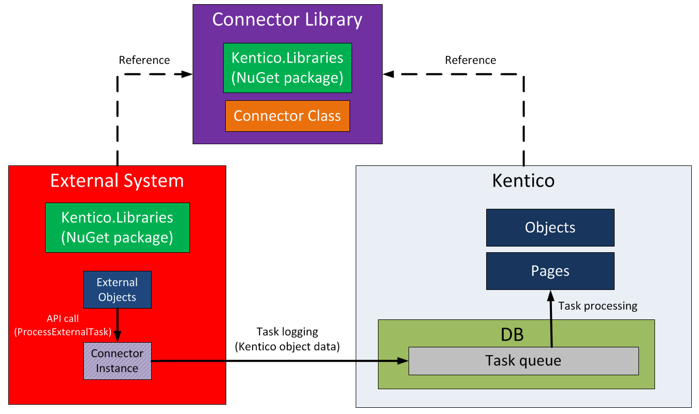

Integration bus overview
The integration bus synchronizes objects and pages with third party systems. It provides a safer and more reliable way than other solutions, because the synchronization tasks can be ordered in a queue and recovered if they fail. You can implement the synchronization in both directions:
Outgoing tasks – perform synchronization from Kentico to external applications.
Incoming tasks – perform synchronization from external systems to Kentico.
Outgoing tasks - From Kentico to external applications
Outgoing synchronization tasks are based on subscriptions.
Subscriptions
Subscriptions keep track of operations performed in Kentico, such as creating, updating or deleting objects and pages. Developers need to prepare subscriptions for operations that should be synchronized to external systems. When an operation that has a subscription occurs, the system passes the request to a connector, which processes the synchronization in one of two modes (depends on the subscription settings):
Asynchronously – synchronization tasks are placed into a queue, which is automatically processed by the system at the end of each web request that logs new tasks. Failed tasks remain in the queue and are executed again during the next task processing.
Synchronously – synchronization tasks are passed directly to the connector.
The role of subscriptions in the integration process
Data types for subscriptions
Subscriptions use one of three data types to specify which data is transferred:
Simple – synchronizes the content of objects.
SimpleSnapshot – synchronizes whole objects and preserves foreign key bindings. This applies only when the 3rd party system has an architecture and database design similar to Kentico.
Snapshot – synchronizes multiple objects at once. For example a main object with its children, such as polls together with poll answers. Not supported for pages.
For details, refer to the TaskDataTypeEnum enumeration.
Asynchronous processing
With asynchronous processing of tasks, the data of the changed object or page is first stored in the database (the task is logged in the task queue). If the external system is not available, the tasks wait ordered in the queue until they can be reliably processed.
The mechanism of asynchronous processing
The advantages of asynchronous processing:
Synchronization data is not lost even if the processing of tasks fails.
Asynchronous processing is highly scalable, all time‑consuming operations are performed one by one.
Allows translation of column values using the TranslateColumnsToExternal() method.
The disadvantages of asynchronous processing:
No context is available during the object/page processing.
Otherwise, asynchronous processing does not have any major disadvantages, and can be used for most scenarios.
To ensure maximum performance, the system postpones the logging and processing of tasks until the EndRequest event.
Flow chart of asynchronous processing of outgoing tasks
Note: Processing doesn’t start on EndRequest when the object or page has been changed in an asynchronous thread (for example when importing new sites with the Log integration tasks option enabled).
When the processing thread starts, the connector begins by fetching the first task in the queue (FIFO principle). Fetched tasks are transformed to strongly typed objects and passed to the methods implemented in the connector class. In some cases, additional methods are called, for example when performing translation of foreign keys. When the task is processed, the result value (of type IntegrationProcessResultEnum) is returned to notify the connector. Depending on the result, the connector decides what to do next.
The role of connectors in asynchronous processing
Note: The BaseIntegrationConnector is already implemented. You only need to prepare the parts of the code shown in the inherited connector class (CustomIntegrationConnector in the figure above).
Synchronous processing
When using synchronous processing, the changed object is passed directly to the connector for further processing.
The mechanism of synchronous processing
The advantages of synchronous processing include:
You can manipulate objects within the context of Kentico – you can access properties like Parent or Children of the currently processed object, and the data is fetched from the database just in time.
With pages, you can access properties like Tags, Categories and Attachments.
The disadvantages of synchronous processing include:
The system does not store the synchronization data in the database – if an error occurs and the connector fails to process the request, the data is lost.
Synchronous processing of large or numerous tasks may slow down the application.
No TranslateColumnsToExternal() method.
It is recommended to use synchronous processing only if you need to leverage the advantages.
Flow chart of synchronous processing of outgoing tasks
Processing of synchronous tasks starts immediately after an object or page matching a subscription is changed. Unlike asynchronous processing, where the logging and processing is postponed until the application reaches EndRequest, synchronous processing sends the data instantly to the subscribed connectors.
The role of connectors in synchronous processing
Incoming tasks - From external applications to Kentico
The inbound direction allows you to transfer changes from external applications to Kentico by sending data to the Integration bus. The system stores the data in a queue, later takes it from the queue, and processes it on a regular basis or on your request. Processing of incoming tasks is always asynchronous.
The mechanism of inbound task processing
Your task as a developer is to implement methods that help the system log the correct data into the queue. You need to convert the external object to a corresponding internal object or page, and supply translation information if you want to preserve foreign key bindings:
There are two ways to implement the communication between Kentico and your external system:
Implement a service
Call the Kentico API (requires references to Kentico DLLs, i.e. installation of the Kentico.Libraries NuGet package)
Implementing a service
The communication is ensured by a custom service (Web API, WCF, etc.) that you need to implement within the Kentico application. The service then calls the Kentico API, which uses a connector to convert external objects to Kentico objects.
The advantage is that your external application does not need to reference Kentico libraries (DLLs).
Inbound synchronization using a custom service
Calling the Kentico API
Your external application needs to reference the Kentico libraries (DLLs) and have a connection to your Kentico database. See Using the Kentico API externally to learn how to set up this scenario.
You need to implement a connector class as part of a separate library, and reference it from both your external application and the related Kentico application.
Then call the API (ProcessExternalTask method) within your application's code, which performs the following tasks:
Converts external objects to Kentico objects using the connector.
Logs the synchronization data (integration tasks) directly into the connected Kentico database.
The advantage is that even if the Kentico application is not accessible for some reason, the synchronization data is logged to the queue and can be reliably processed later without loss of data.

Inbound synchronization using the Kentico API